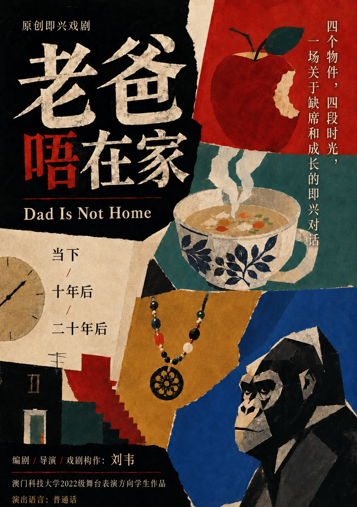

01 · Cultural technology文化科技
Improvisation Studio即兴片场
Improvisation Studio: An Audience-Directed Laboratory of Human–AI Co-Performance
Juried artwork, ICHEC 2026 Art Gallery, Macao ICHEC 2026 艺术展评审入选，澳门
A visitor takes the place of the acting teacher for two AI performers. Every line is generated live, and a third role can only be spoken by a human.
一位观众担任表演老师，指导两位 AI 演员即兴；每句台词都是现场生成的，第三个角色只能由真人来说。
Wei Liu (performance & directing design), Feibi Liu (Independent Researcher, Seattle; technical implementation). 刘韦（表演与导演设计），Feibi Liu（独立研究者，西雅图；技术实现）。
Selected for the ICHEC 2026 Art Gallery 入选 ICHEC 2026 艺术展

02 · Narrative art叙事艺术
Dad Is Not Home老爸唔在家
Original improvised play · 2025 · GYTF 2026 passed the first round, advanced to the second review 原创即兴戏剧 · 2025 · GYTF 2026 初审通过，进入复审
An original improvisational theatre work about absence, growing up and the passage of time. The work moves between the present, ten years later and twenty years later.
一部关于缺席、成长与时间流逝的原创即兴戏剧。作品在当下、十年后与二十年后之间展开。
Conception, direction and dramaturgy: Wei Liu. Developed through creative work with the 2022 performance cohort at Macau University of Science and Technology. Original project credits are retained. 构想、导演与戏剧构作：刘韦。与澳门科技大学 2022 级表演同学共同创作发展。原项目署名予以保留。
Dad Is Not Home
03 · Research研究
CARE
Early research早期研究
An early research direction exploring how performance methods can inform communication, listening and response. Its starting points include “The Third Performer” and “Every Action is an Offer”.
一个早期研究方向，探索表演方法如何进入沟通、倾听与回应。起点包括 “The Third Performer” 与 “Every Action is an Offer”。
The longer-term research interest is embodied AI for emotional interaction with older adults. Currently at an early research stage. 更长期的研究兴趣是面向老年人情感互动的具身人工智能。目前仍处于早期研究阶段。
Not a company results list不是公司业绩
Founder & team record创始人和团队经历
Credits and research of the founder and collaborators. This is not a list of company results, and advertising work is not shown as clients.
创始人与合作者的创作和研究经历。这不是公司业绩，广告作品也不作为客户列出。
-
Founder & Feibi Liu创始人与 Feibi Liu
ICHEC 2026 Art Gallery
Improvisation Studio was juried into the ICHEC 2026 Art Gallery (International Conference on Human-Engaged Computing), at Wynn Macau, 24–25 November 2026. Wei Liu — performance and directing design. Feibi Liu — technical implementation; Independent Researcher, Seattle.
「即兴片场」经评审入选 ICHEC 2026 艺术展（International Conference on Human-Engaged Computing），2026 年 11 月 24 日至 25 日，澳门永利。刘韦：表演与导演设计。Feibi Liu：技术实现；独立研究者，西雅图。
-
Founder & Feibi Liu创始人与 Feibi Liu
ACM Multimedia Asia 2026
Prompt as Score, by Wei Liu and Feibi Liu, was accepted as a short paper for ACM Multimedia Asia 2026 in Hanoi, 15–18 December 2026.
Prompt as Score（刘韦、Feibi Liu）获 ACM Multimedia Asia 2026 短文录用，河内，2026 年 12 月 15 日至 18 日。
-
Founder创始人
Dad Is Not Home · GYTF 2026老爸唔在家 · GYTF 2026
An original improvised play in Mandarin, about 70 minutes. Passed the first round, advanced to the second review of GYTF 2026, the first Greater Bay Area campus theatre festival. One performance: 13 November 2025, 19:30, Macau University of Science and Technology, Dhall (venue). Wei Liu: dramaturgy, direction, and the writing of the acts “Ten years later” and “Twenty years later.”
普通话原创即兴戏剧，约 70 分钟。首届大湾区校园戏剧季（GYTF 2026）初审通过，进入复审。演出 1 场：2025 年 11 月 13 日 19:30，澳门科技大学 Dhall（场地）。刘韦：戏剧构作、导演，并编写「十年后」「二十年后」两幕。
-
Founder创始人
Public workshop · May 2026「从呼吸到表达」
Wei Liu curated and led this free public workshop in Macao, 7–10 May 2026: four days, about three hours a day, with a guest instructor. Funded by the Macao Foundation.
刘韦策划并带领这场免费公众工作坊，2026 年 5 月 7 日至 10 日，澳门，共 4 天，每天约 3 小时。客座导师高詠詩。澳门基金会资助。
-
Founder创始人
TaPRA 2026
When Emotion Has No “Inside” was presented at TaPRA 2026, Queen Mary University of London, in the Performance and New Technologies working group, on 4 September 2026.
When Emotion Has No “Inside” 于 2026 年 9 月 4 日在伦敦玛丽女王大学 TaPRA 2026 的 Performance and New Technologies 工作组宣读。
-
Founder创始人
Screen影视
Leading roles in more than 20 films and television dramas, and more than 100 commercials between 2006 and 2018.
主演影视剧超过 20 部；2006 年至 2018 年间参与广告超过 100 条。
North by Northeast (director Zhang Bingjian; Wei Liu in the lead): nominated for best film in the Asian Future section of the 27th Tokyo International Film Festival, where it had its world premiere; the 51st Golden Horse Awards nominated the film for best cinematography and best original score; the 18th Shanghai International Film Festival gave it Asian New Talent nominations for best director and best actor; opening film of the 3rd Singapore Chinese Film Festival; selected for the 39th Montreal World Film Festival and the 37th Cairo International Film Festival.
《东北偏北》（导演张秉坚，刘韦饰半拉瓜）：第 27 届东京国际电影节「亚洲未来」最佳影片提名，并于该节世界首映；第 51 届金马奖最佳摄影、最佳原创音乐提名；第 18 届上海国际电影节亚洲新人奖最佳导演、最佳男演员提名；第三届新加坡华语电影节开幕片；入选第 39 届蒙特利尔世界电影节与第 37 届开罗国际电影节。
The Enigma of Arrival (director Song Wen; Wei Liu in the lead): world premiere in the Asian Windows section of the 23rd Busan International Film Festival (October 2018); screened at the 9th Beijing International Film Festival (2019), the 6th Silk Road International Film Festival (October 2019), and the 28th Golden Rooster and Hundred Flowers Film Festival (November 2019); theatrical release in July 2020.
《抵达之谜》（导演宋文，刘韦饰三皮）：第 23 届釜山国际电影节「亚洲之窗」世界首映（2018 年 10 月）；第 9 届北京国际电影节展映（2019）；第 6 届丝绸之路国际电影节（2019 年 10 月）；第 28 届金鸡百花电影节（2019 年 11 月）；2020 年 7 月院线上映。
Second assistant director on Feng Xiaogang’s If You Are the One (2008), and cast assistant director on Aftershock (2009).
冯小刚《非诚勿扰》第二副导演（2008），《唐山大地震》演员副导演（2009）。
-
Founder创始人
2019 casting startup2019 选角创业
He founded BFA Shenfan, a casting platform. The project won first prize in the Beijing division of the China “Internet+” competition, the only art-school winner in that division; it was also among the top 30 of the Beijing cultural and creative competition, and first in the Beijing Film Academy campus entrepreneurship contest.
他创立选角平台「北电甚蕃」。该项目获中国「互联网+」大赛北京赛区一等奖（该赛区唯一艺术院校），入围北京文创大赛 30 强，并获北京电影学院校园创业大赛第一名。
-
Founder创始人
2020 theory prize2020 理论奖
Third prize in the theory category of the first International Drama “Academy Award”, from the Central Academy of Drama, as the only young scholar.
中央戏剧学院首届国际戏剧「学院奖」理论奖三等奖，唯一青年学者。
Workshops 工作坊
Workshops in Improvisation & Applied Theatre — in English and Mandarin
I lead bilingual (English / Mandarin) workshops that use improvisation to build listening, trust and shared storytelling, drawing on actor training (including the Meisner technique) and my research on human–AI co-performance:
- “Yes, and.” Accept an offer, add something specific, build the scene together.
- Attention. Listen to a partner, notice a change, respond to what is actually happening.
- Reflection. Step out of the exercise to talk about how choices shape relationships.
Suitable for community groups, artists and students, with or without performance experience. Contact: wliutmr@gmail.com
Past workshops
Public workshop · 7–10 May 2026 · Macao
Curated and led by Wei Liu, with a guest instructor. Four days, about three hours a day, free and open to the public. Funded by the Macao Foundation.
即兴与应用戏剧工作坊（中文 / 英文）
我用中英双语带即兴工作坊，用即兴练倾听、信任和共同讲故事。内容来自演员训练（包括迈斯纳方法）和我对人机共同表演的研究：
- 「是的，而且」：接住对方给的提议，加一点具体的东西，一起把场景搭起来。
- 注意力：听对方，察觉变化，回应真正发生的事。
- 反思：从练习里跳出来，讨论选择怎样塑造关系。
适合社区团体、艺术工作者和学生，有没有表演经验都可以。联系：wliutmr@gmail.com
已办场次
「从呼吸到表达」 · 2026 年 5 月 7 日至 10 日 · 澳门
刘韦策划并带领，客座导师高詠詩。共 4 天，每天约 3 小时，免费向公众开放。澳门基金会资助。